OMP DigiCoach guides you through the One-Minute Preceptor: five short teaching steps in about one minute, at the bedside. The app shows you what to ask, keeps time, and records the session.
Step
Name
What you do
1
Get a Commitment
Ask the learner for a diagnosis or plan
2
Probe for Evidence
Explore their reasoning
3
Teach General Rule
Teach one or two key points
4
Reinforce Strengths
Praise what went well
5
Correct & Improve
Guide improvement
After each step you rate the learner from 1 to 5:
Stars
Meaning
1
Needs improvement
2
Basic
3
Competent
4
Proficient
5
Excellent
You see only your own sessions and ratings. The student list is shared by all doctors.
2. Getting started
You need your phone and the username and temporary password the admin gave you.
Log in for the first time
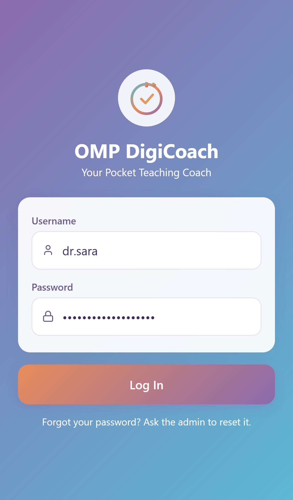
The login page.
On your phone, open Safari (iPhone) or Chrome (Android).
Go to ompdigicoach.com.
Type your Username and the temporary password.
Tap Log In.
You need signal the first timeAfter that, the app works without signal too.
Choose your own password
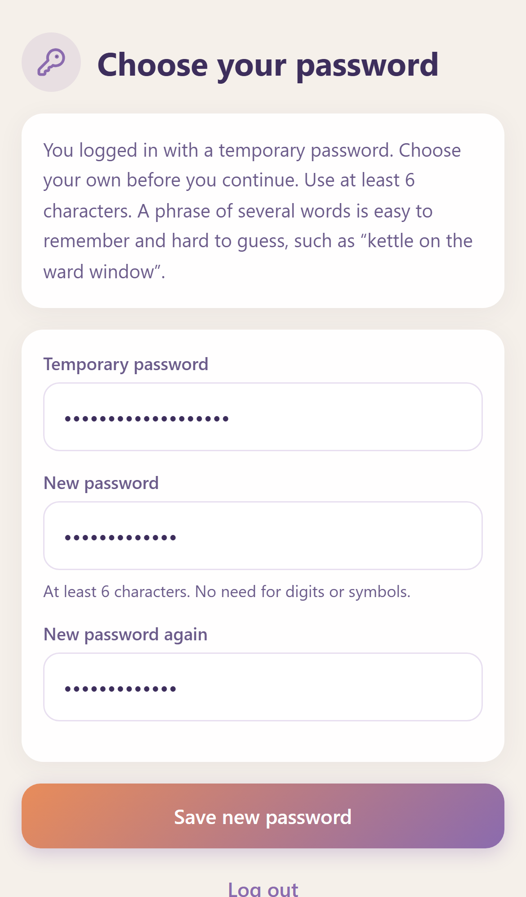
Choosing your password.
Type the temporary password again.
Type your new password twice. Use at least 6 characters. A few words are easy to remember, such as “tea on the ward window”.
Tap Save new password.
The temporary password stops working. Keep your new password to yourself.
You stay logged in on your phone as long as you use the app now and then. You don’t need to log in every day.
3. Putting the app on your home screen
Do this once, straight after your first login. The installed app opens without signal and keeps your sessions safe. There is nothing to download from an app store.
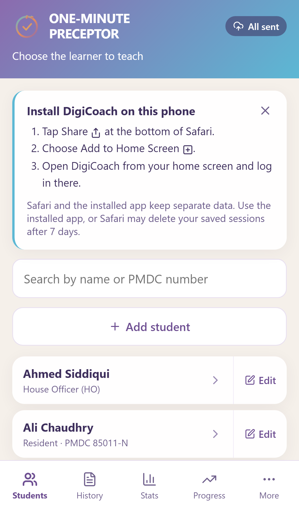
The install instructions show at the top of the student list.
iPhone (Safari)
Tap Share (the square with an arrow) at the bottom of Safari.
Choose Add to Home Screen, then Add.
Open DigiCoach from your home screen and log in there.
Android (Chrome)
Tap Install in the app’s install box. Or open Chrome’s menu ⋮ and choose Install app.
Open DigiCoach from your home screen.
iPhone: always use the installed appSafari and the installed app keep separate data. If you record sessions in Safari, Safari may delete them after 7 days.
Tap × to hide the install box. It stays under More.
4. The app tour
The first time you log in, a short tour shows you how the app works. It takes about two minutes.
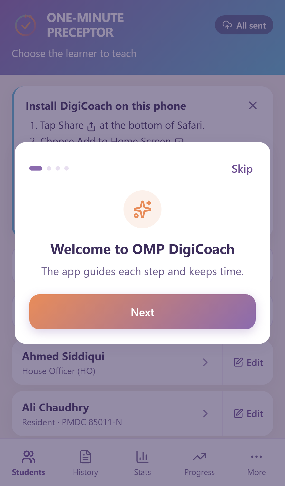
Four short cards. Tap Next.
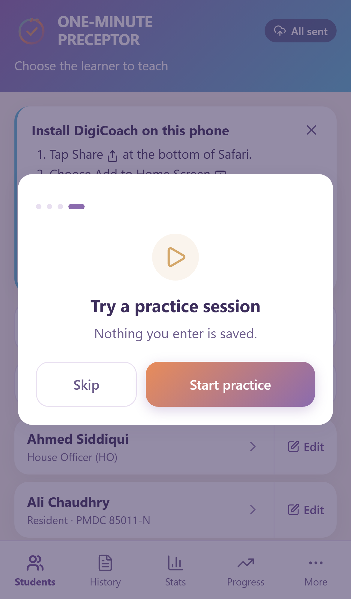
The last card offers a practice session.
The practice session uses a made-up learner called “Practice Learner”. Hints show you which button to tap next. Nothing you enter in practice is saved.
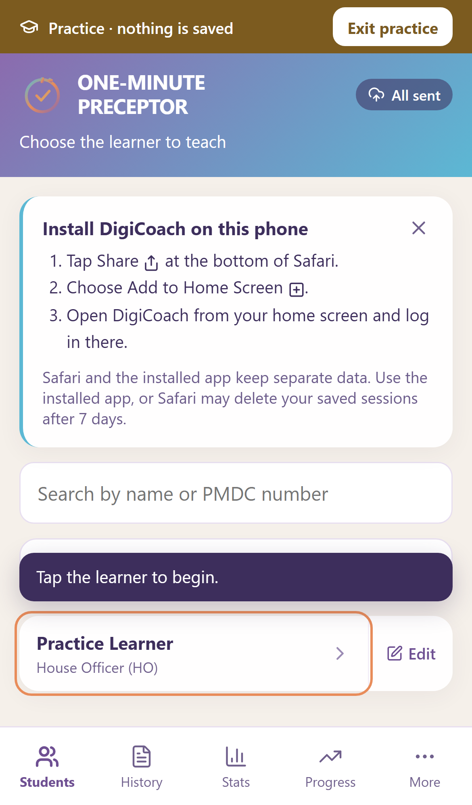
A hint and an orange ring show where to tap.
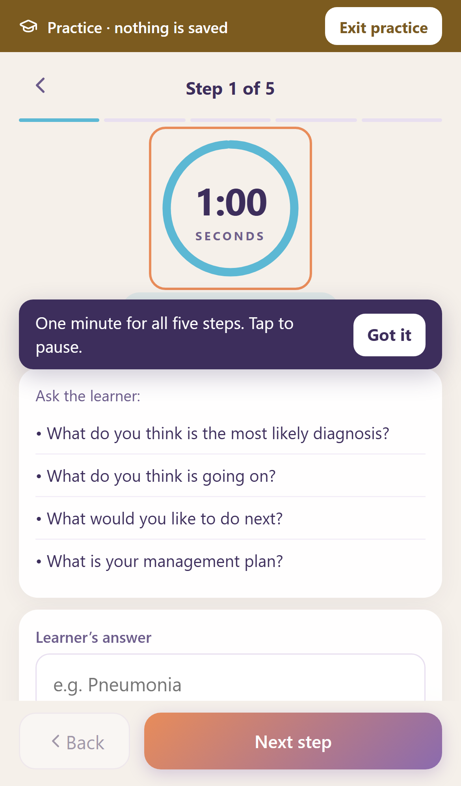
Tap Got it to see the next hint.
The strip at the top reminds you that you are practising. Tap Exit practice to stop at any time.
After you save the practice session, you see You’re ready. Tap Start teaching.
Tap Skip on any card if you don’t want the tour.
To see the tour again later: More → App tour.
5. The main screen
The app opens on your student list, Choose the learner to teach.
The student list.
The badge at the top right shows whether your sessions have been sent. See chapter 11.
Search: type part of a name or a PMDC number.
+ Add student: add a new learner.
Tap a student’s name to start teaching them.
Edit: correct a student’s details.
The tabs at the bottom
Tab
Shows
Students
This list
History
Your past sessions
Stats
Your teaching figures
Progress
How each of your students is doing
More
Pearls, help, tour, log out
6. Adding and correcting students
All doctors share one student list. Search first: the learner may already be there.
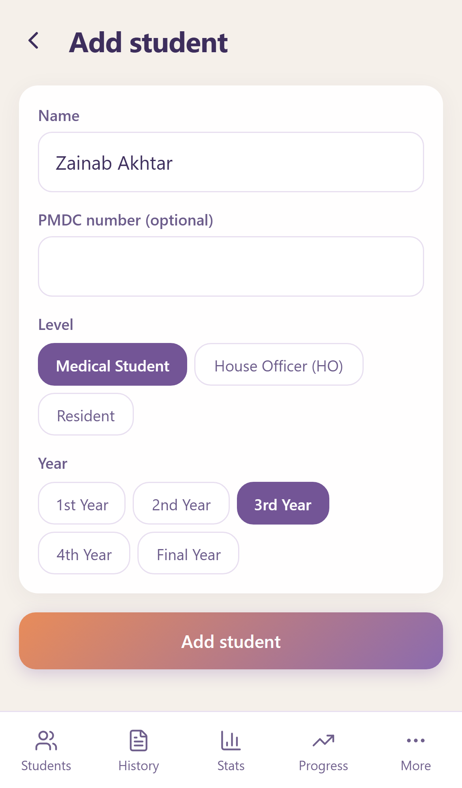
Adding a student.
Add a student
Tap + Add student.
Type their Name.
Type their PMDC number if you know it. It is optional, but it helps tell students apart.
Tap their Level: Medical Student, House Officer (HO) or Resident.
For a medical student, tap their Year.
Tap Add student.
If a student with the same name already exists, the form asks “Is this …?” with a link to teach that student instead. Use it if it is the same person, so their sessions stay together.
Correct a student
Tap Edit next to their name, change the details, and tap Save correction. The change reaches the other doctors too.
7. Teaching a session
Set up
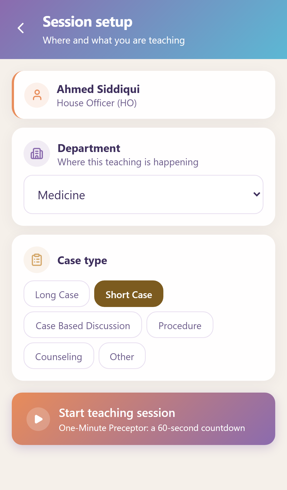
Session setup.
On the student list, tap the learner’s name.
Check the Department. It starts with your own department; change it if you are teaching elsewhere.
Tap the Case type: Long Case, Short Case, Case Based Discussion, Procedure, Counseling or Other.
Tap Start teaching session. The one-minute timer starts.
The timer
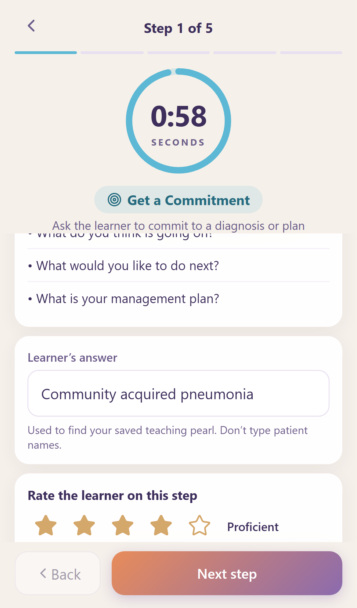
Counting down: 58 seconds left.
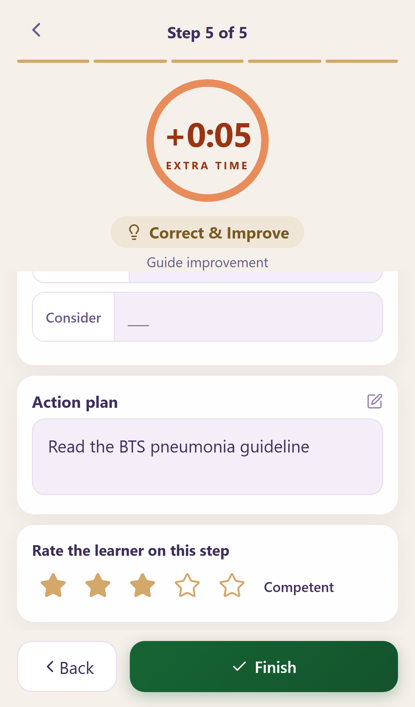
Past one minute: the ring turns orange and shows extra time.
One minute covers all five steps, not one minute per step.
At 0:00 nothing stops. The timer shows extra time, for example “+0:05”. Finish the steps calmly.
Tap the timer to pause, for example if you are interrupted. It shows PAUSED. Tap it again to carry on. Paused time is not counted as teaching time.
Moving between steps
Next step goes forward. Back goes to the step before. You can go back and change anything.
The bar under “Step 1 of 5” shows where you are.
On step 5 the button changes to Finish.
The arrow at the top left leaves the session without losing it (see chapter 10).
8. The five steps
Each step shows questions or sentence starters to help you, and a place to rate the learner. Typing is optional: say things aloud and type only what is useful.
Never type patient namesType diagnoses and teaching points only.
Rate the learner on each step
Step 1, rated 4 stars: Proficient.
At the bottom of every step, tap a star. The meaning shows beside it, for example Proficient. Scroll down if you can’t see the stars.
Rate every step if you can: your stats show how often you rated all five.
Step 1: Get a Commitment
Ask one of the questions shown. Type the learner’s answer in Learner’s answer, for example “Pneumonia”. The app uses it to find a teaching pearl you saved before (step 3).
Step 2: Probe for Evidence
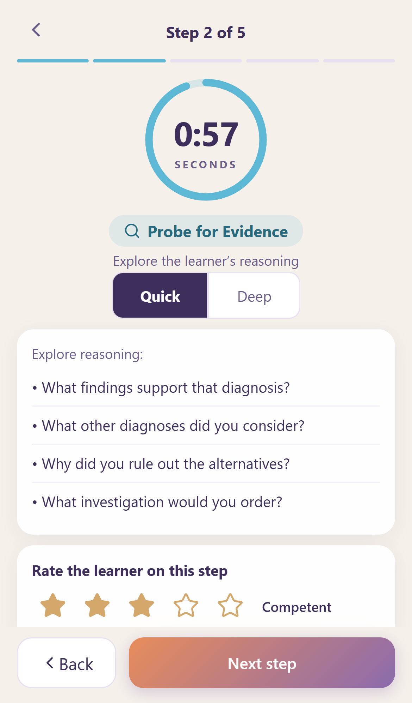
Step 2 with Quick and Deep questions.
Explore the learner’s reasoning. Tap Quick for a few short questions, or Deep for more detailed ones. Then rate the step.
Step 3: Teach General Rule
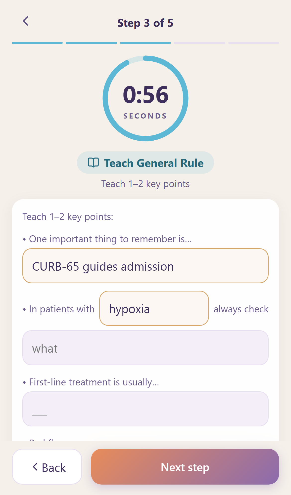
Fill in the teaching points.
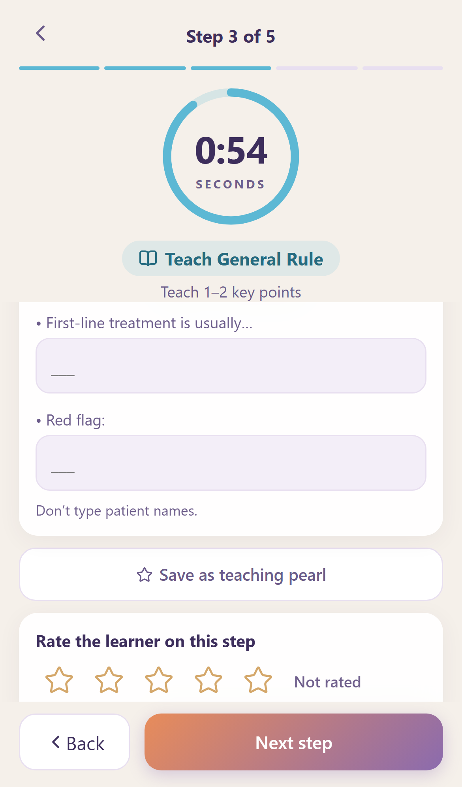
Save your points as a teaching pearl.
Teach one or two key points. Fill in any of the blanks, such as “One important thing to remember is…” or “Red flag:”.
Teaching pearls save you typing next time:
Tap Save as teaching pearl to keep these points under the learner’s answer from step 1, for example “Pneumonia”.
Next time a learner gives a matching answer, step 3 shows Saved pearl. Tap Use saved pearl to fill in the points.
Your pearls are private. Manage them under More → Teaching pearls.
Step 4: Reinforce Strengths
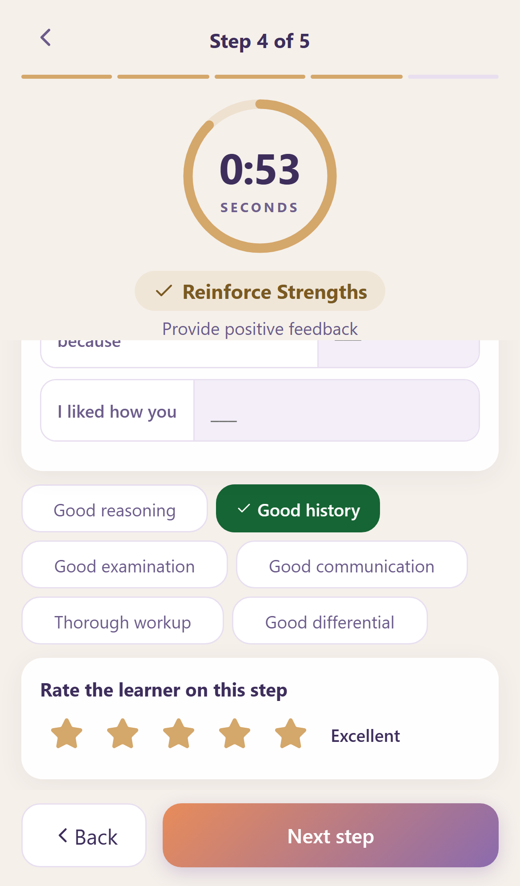
Tap what the learner did well.
Tell the learner what they did well. Use the sentence starters, such as “I liked how you… because…”.
Tap the matching labels, such as Good history or Good reasoning. Tap a label again to remove it. Then rate the step.
Step 5: Correct & Improve
Step 5, with the Finish button.
Guide the learner on what to improve, using the starters such as “Consider…”. Type an Action plan if you agreed one, for example “Read the pneumonia guideline”.
Rate the step, then tap Finish. The timer stops.
9. Finishing: the quick log
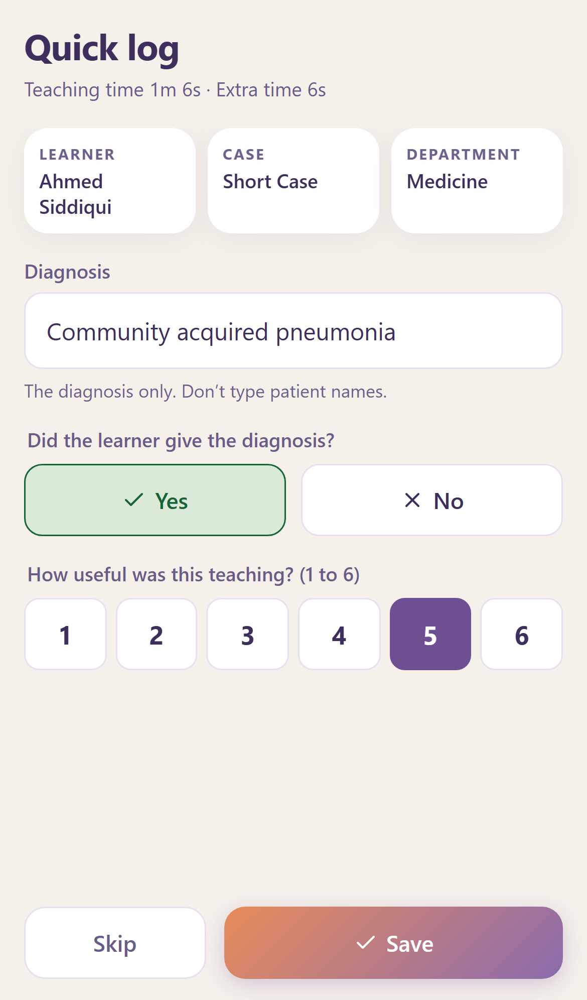
The quick log.
After Finish, the quick log shows the teaching time and any extra time.
Diagnosis: type the diagnosis only.
Did the learner give the diagnosis? Tap Yes or No.
How useful was this teaching? Tap a number from 1 (not useful) to 6 (very useful).
Tap Save.
In a hurry? Tap Skip. The session and ratings are still saved, just without these details.
You see Session saved. It is stored on your phone straight away and sent when there is signal.
10. A session left open
If you leave a session, or your phone locks or the app closes, nothing is lost. The session waits for you.
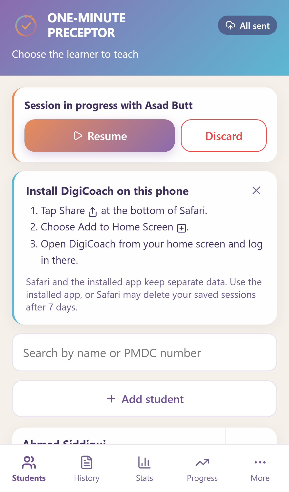
A session waiting at the top of the student list.
Tap Resume to carry on where you stopped.
Tap Discard, then confirm, to throw it away. Nothing from it is saved.
When you reopen the app, an open session comes back by itself. If it was left for more than 15 minutes, the app asks whether to resume or discard it.
The timer keeps counting while the app is closed, unless you paused it.
Only one session can be open at a time. Starting a new one asks you to discard the open one first.
11. Working without signal
You can teach anywhere, even with no signal. Sessions are saved on your phone and sent by themselves when signal returns. You don’t need to do anything.
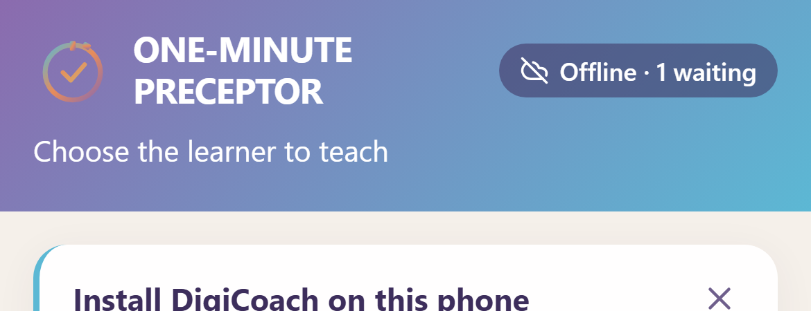
No signal: one session is waiting on the phone.
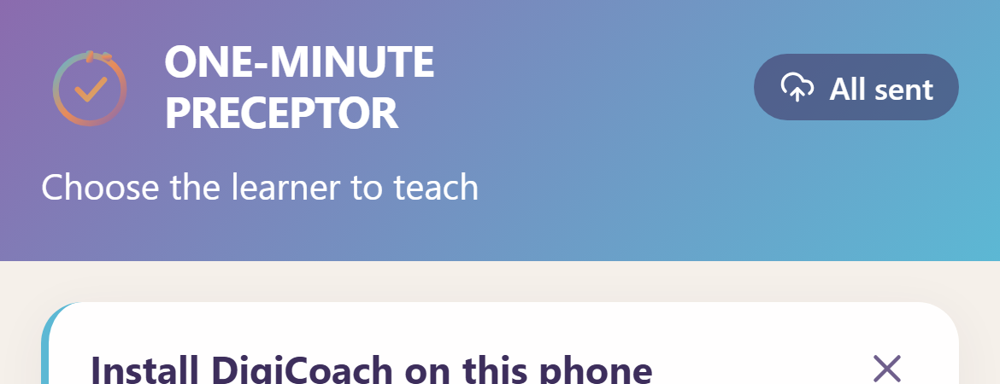
Signal is back: everything has been sent.
Badge says
Meaning
All sent
Everything is safely on the server.
Sending…
Sending now. Wait a moment.
1 waiting
Saved on your phone, will be sent soon.
Offline · 1 waiting
No signal. It will be sent when signal returns.
Log in to send 1
Your login has ended. Tap Log in on the banner. Your sessions are kept.
Don’t log out while sessions are waitingLogging out deletes everything stored on the phone, including sessions not yet sent. Wait for “All sent” first.
12. History, Stats and Progress
These pages show only your own sessions.
History
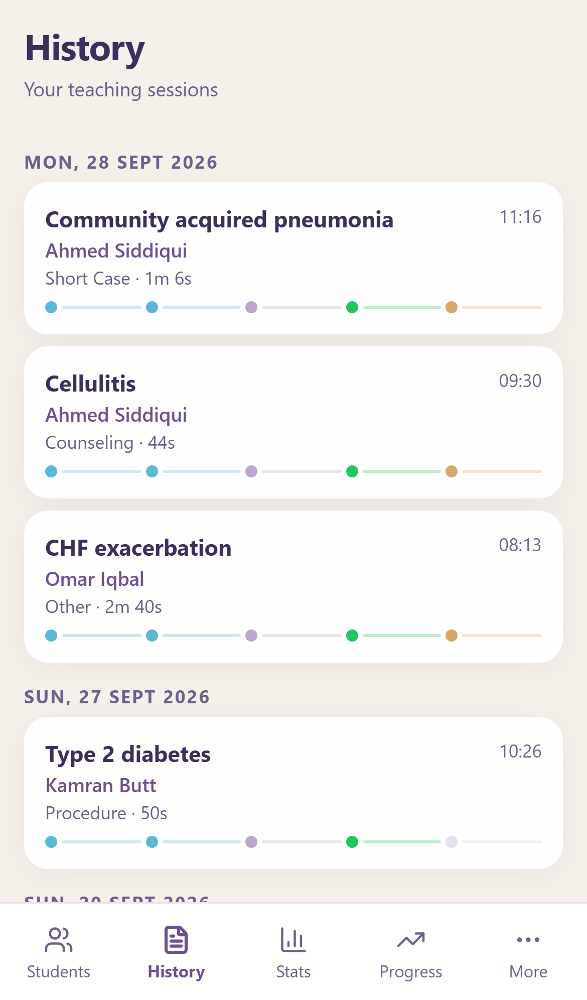
Your sessions, newest first, by day.
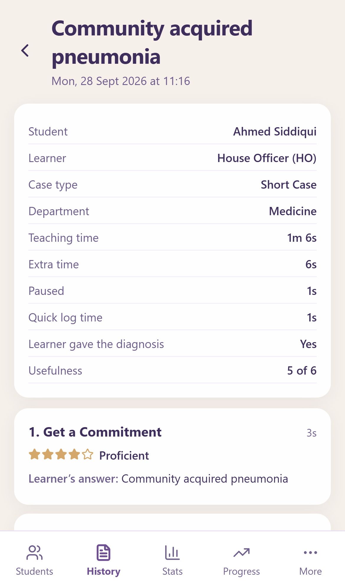
Tap a session to see every detail.
The dots on each session show how many steps you rated. Tap a session to see the student, times, the quick log and each step’s rating and notes.
Stats
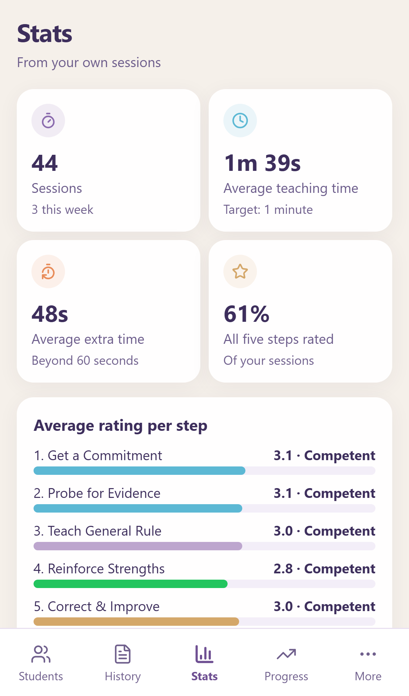
Your teaching figures.
Sessions: in total and this week (from Monday).
Average teaching time: the target is 1 minute.
Average extra time: how far past 60 seconds you usually go.
All five steps rated: how often you rated every step.
Average rating per step, and further down, your sessions on each day of the week.
Progress
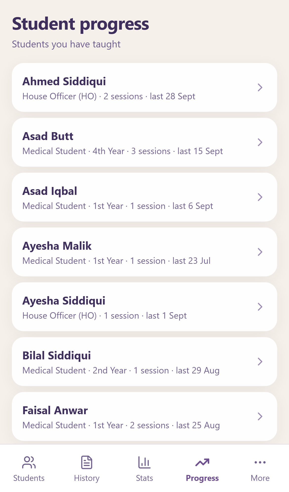
The students you have taught.
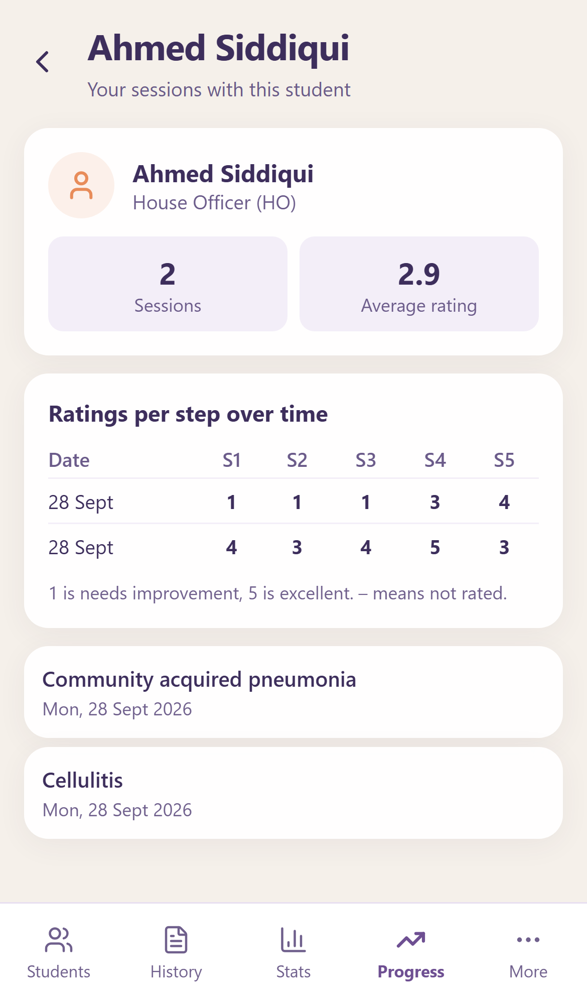
One student: your ratings per step over time.
Tap a student to see your ratings for each step, session by session (S1 to S5 are steps 1 to 5). Use it to spot where a learner is improving or needs help.
13. More: pearls, help and logging out
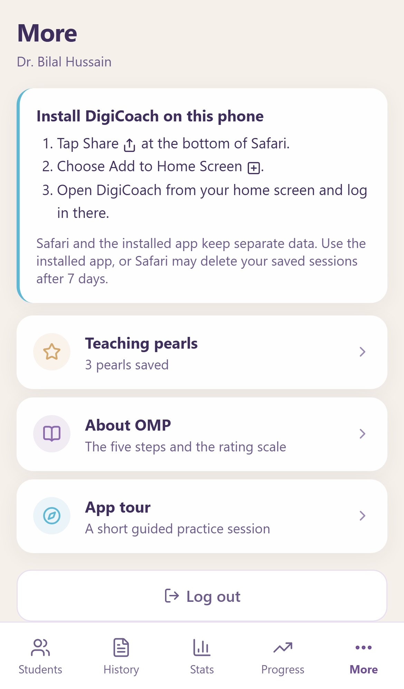
The More tab.
Install DigiCoach on this phone: shows until the app is installed (chapter 3).
Teaching pearls: search, edit or delete your saved pearls.
About OMP: the five steps and the rating scale.
App tour: run the tour and practice session again.
Log out: see the warning below.
The app version is shown at the bottom. The support team may ask for it.
If the server ever refuses something you saved, it is listed here under items need attention. Show it to the admin.
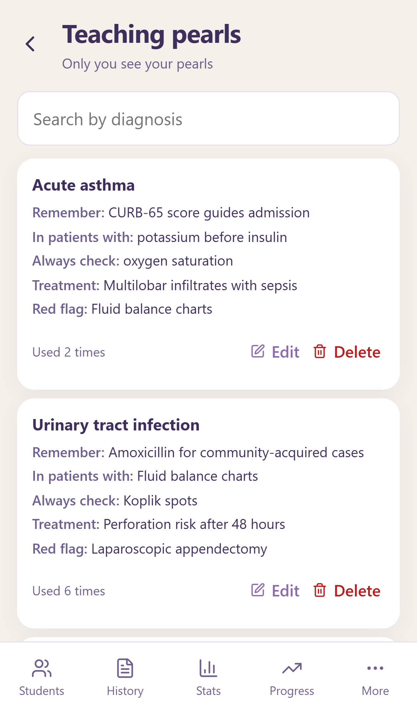
Your teaching pearls.
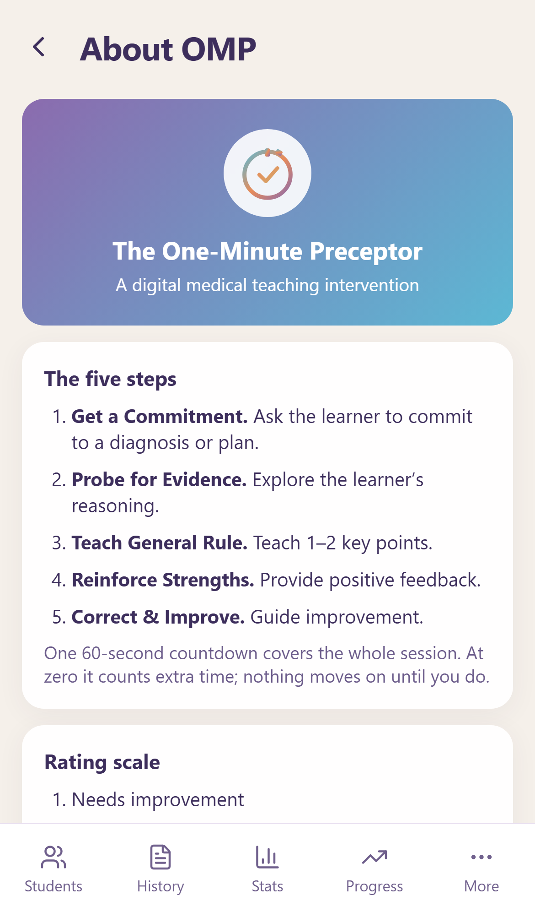
About OMP.
Logging out
You rarely need to log out on your own phone. Log out only if you are giving the phone to someone else.
Logging out clears the phoneIt deletes everything the app stored on this phone. If sessions are still waiting to be sent, the app warns you first: find signal and wait for “All sent” before logging out.
14. Problems and answers
I forgot my password.
Ask the admin to reset it. They will give you a new temporary password in person or by phone. Your sessions are safe.
“Wrong username or password.”
Check the username with the admin; type it in small letters, exactly. Passwords are case-sensitive.
“This account has been switched off. Ask the admin.”
The admin has switched off your account. Ask them to switch it on again.
“No connection. The first login needs signal.”
Your very first login needs signal or Wi-Fi. After that the app opens without signal.
The badge says “Offline · 2 waiting”.
That is fine. Your sessions are safe on the phone and will be sent when you have signal. Open the app somewhere with signal to send them.
The app says my login has ended.
Tap Log in on the banner and log in again. Everything on the phone is kept and then sent.
I pressed Back by mistake during a session.
Nothing is lost. Tap Resume at the top of the student list.
I started a session with the wrong student.
Leave the session with the arrow at the top left, tap Discard, and start again with the right student.
The same student is in the list twice.
Use the one with the right PMDC number, and tell the admin so they can correct the other.
“A new version is ready.”
Tap Reload. The message never appears during a session, so nothing is interrupted.
I see “Safari may delete your saved sessions”.
You are using Safari instead of the installed app. Put the app on your home screen (chapter 3) and use it from there.